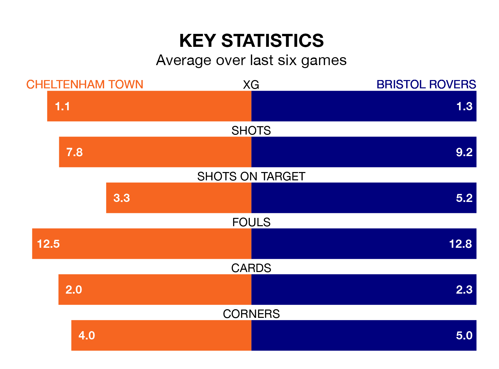

Cheltenham Town and Bristol Rovers both come into Saturday's kick-off at the Completely-Suzuki Stadium in poor form, having picked up four and two points respectively in their last six games.
The Robins have won one and drawn one of the last six, while the Gas have taken two draws and four losses.
Cheltenham are 22nd in the table after 41 games, of which they have won 10 and drawn eight, earning 38 points.
Rovers are five places ahead of Town in 17th, with 14 wins and nine draws putting them on 51 points.
In the last 10 years, Cheltenham and Rovers have played each other on seven occasions. Cheltenham won one of them, Rovers five, and they drew once.
On average, the Robins scored 0.9 goals and the Gas 2.3 in those matches.
Their last meeting was on December 9, when they played out a 1-1 draw.
In Chris Martin, the Gas have one of the league's sharpest shooters so far this season. He has notched 15 goals in 32 appearances, to sit fifth in the scoring charts.
His goal rate of one every 158 minutes is much quicker than that of Liam Sercombe, the Robins' top scorer with a goal every 329 minutes, and a total of nine goals in 40 games.
With 34 goals in 41 games so far this season, the hosts are the league's third-lowest scorers with 0.8 goals per game. And they are conceding more than average, letting in 57 goals at a rate of 1.4 per game.
The away team are also below average scorers, with 1.1 goals per game, compared to a league average of 1.3. They have conceded 1.5 goals per game.
Cheltenham's last match was on Tuesday, a 1-0 loss against Carlisle United.
Rovers lost 2-0 against Reading last time out, also on Tuesday.
Saturday's match will be refereed by Paul Howard, who has taken charge of 11 EFL League One games so far this season, issuing two red cards and booking 47 players. He has awarded one penalty.
The last Cheltenham game Howard refereed was a 2-0 home win against Shrewsbury Town on December 26. He is yet to oversee a match featuring Rovers this season.
Updated: 10:01 (UTC), 12/04/24